Flow Survey Reader — the free Odoo survey module with no response limit
Hit the Typeform response limit and the answers stop arriving. Flow Survey Reader has none: publish a public survey link and collect feedback straight into Odoo.
Free to install · odoo@doodex.net · WhatsApp +62 821-3120-5030
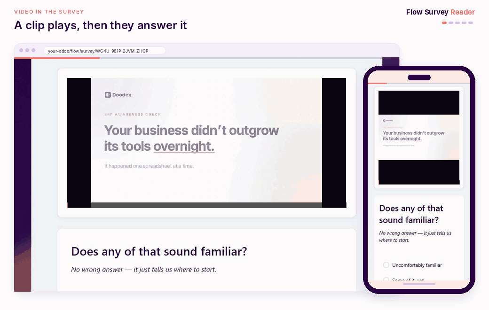
| Overview | 01 / 05 |
Share one link. Collect feedback in Odoo.
Three steps, and nothing in the middle.
A random access code — not a guessable database id.
One public link
Set the survey to Published, click Share, copy the public survey link.
It looks like /flow/survey/<code> — put it in an email, a QR code, a website button or a chat message.
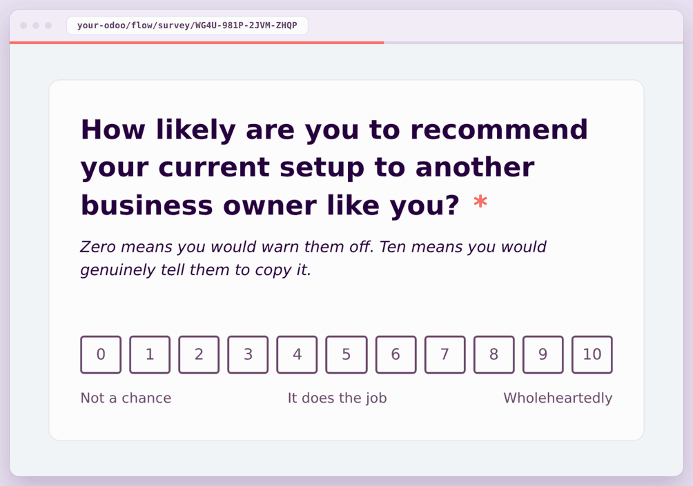
They answer it
One question at a time, in the order the survey decides.
No sign-up, no login, no app to install.

It lands in Odoo
Flow Survey → Participants, one row per submission.
Stored in your own Odoo database, next to your contacts, leads and reporting — your data never leaves your instance.
Start from a finished survey, not a blank one
The three steps above need a survey to run on. Take a ready-made one as a .json template, import it into the free Reader, and the public link is live — nothing to build, and nothing for the person answering to install.
Flow Survey Builder
The drag-and-drop editor for these same templates — 25 question types, slide branching and full theming. The survey is built on screen, not in the file.
One runtime, four everyday jobs
Customer satisfaction surveysSend a rating link after delivery or after a support ticket, and keep every score inside Odoo — the same place you already track customer conversations. |
Lead qualification formsAsk the three or four questions that decide whether a lead is worth a call, and route each profile to its own closing screen. Asking them up front is one fix for a CRM that is not converting. |
Application and intake formsCollect structured answers and file uploads from candidates or clients on a public link, with no portal account to create for them — then book the call straight from Odoo. |
Internal feedback and auditsRun the same survey questions across teams or sites, on any device, and report on the answers with standard Odoo views — the same groundwork as activity reporting in Odoo. |
Six of the 25 question types, as this module draws them
These six are the ones people ask to see before they install. The other nineteen are drawn by the same free runtime.
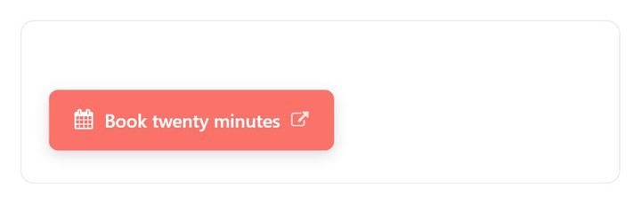
A meeting booked from inside the survey
Put a booking button in a slide and the respondent takes the next step without leaving the survey — your label, your colour, your scheduling link. Odoo stores the click with the rest of the answers as Clicked or Not Clicked, so the survey that asks for a meeting also tells you who wanted one.
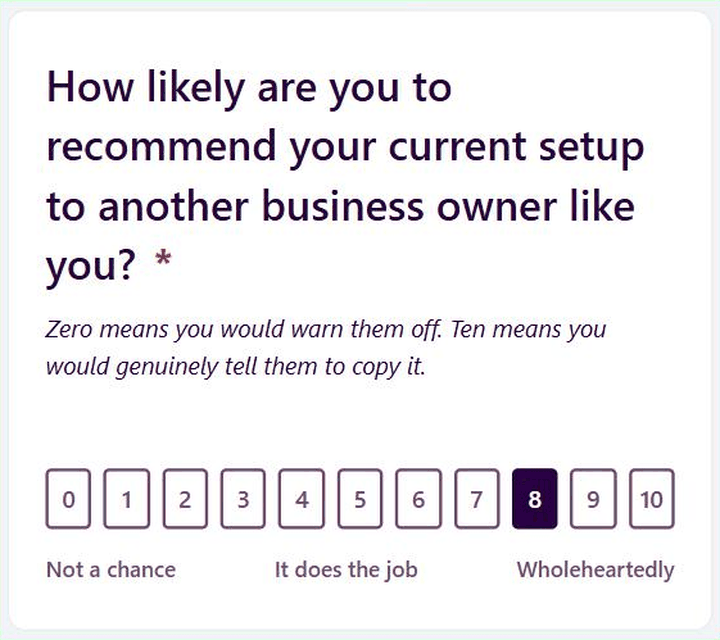
Opinion scale, with your own end points
One tap to score you — 0 to 10, or any range you set, with your own wording at each end. The question customer satisfaction surveys are built on.
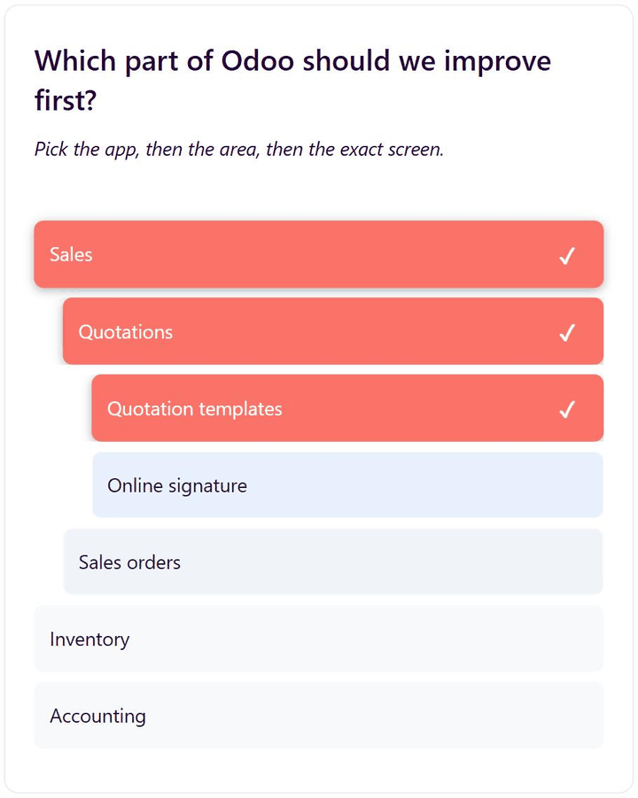
Multi-level selection, three levels deep
One question that narrows instead of three that repeat: pick the app, then the area, then the exact screen. Each choice opens the level under it on the public page, and Odoo stores the whole path with the answer — a category tree in a survey question, with no follow-up questions to maintain.
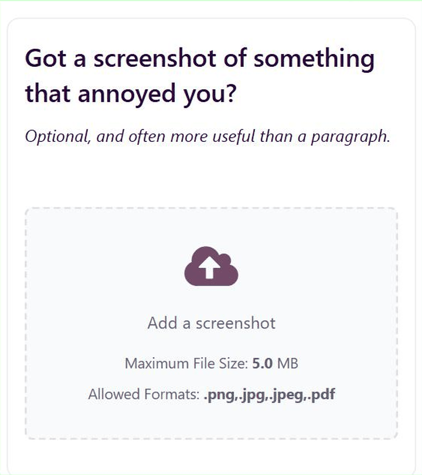
File upload from the public link
Ask for the CV, the receipt or the photo and get it with the answers — no portal account for them, and it lands in Odoo as a normal attachment.
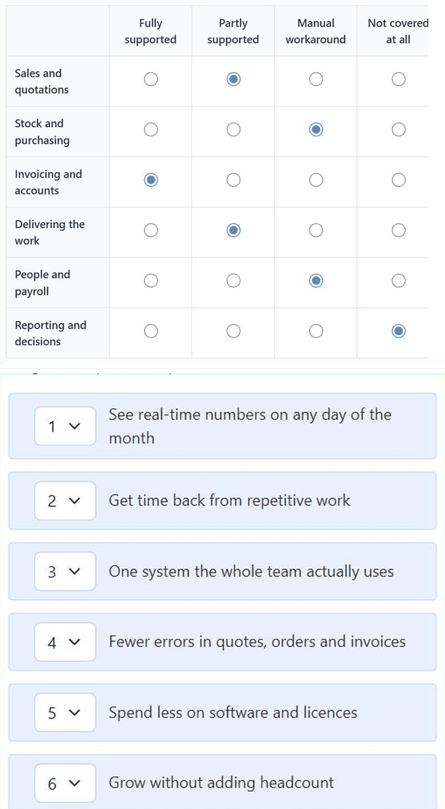
Matrix and ranking questions
One grid of rows and columns, or a list the respondent drags into their own order — both rendered on the public page and stored answer by answer.
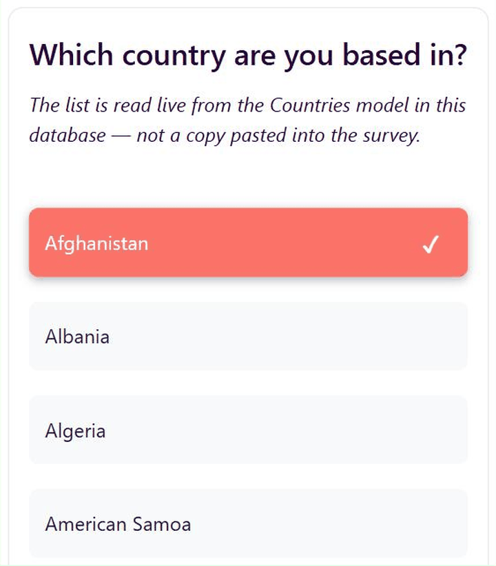
Database selector, read live
Options come straight from a model in your own database, so the list a respondent picks from is never a copy that went stale.
All 25 question types are drawn by this same free runtime.
Short text, long text, numbers, dates, addresses, dropdowns, yes/no toggles and the rest — named one by one in Features.
Everything on this page ships in the free module
No subscription, no per-response fee, and no cap on the number of submissions. Built and tested for Odoo 17.0.
Install the free Reader and run your first survey
There is nothing to cancel and no clock running. If you want a question answered before you install, ask us — a real person replies.
Scan a code with your phone, or type the address on the button — both reach the same place.
| Features | 02 / 05 |
One module, three jobs
Reader is a single free module. Below is what it does, in the three parts a buyer actually asks about, and then the six screens you can page through one at a time.
It looks like you, on any screen.
Three screens make up a survey — the cover, the question slides and the ending page — and this module draws all of them, in your colours, at whatever width the respondent opens them on.
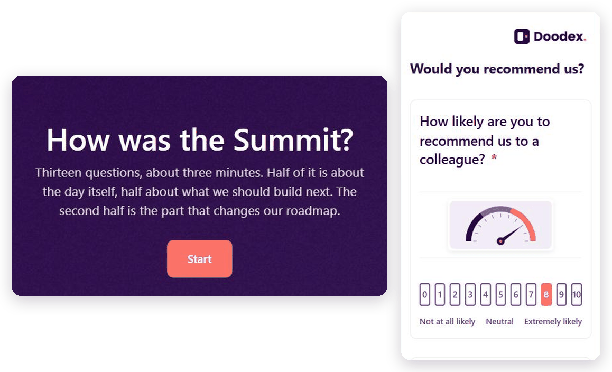
A progress bar that keeps people going
A progress bar, on by default, and off in one click.
It looks like your brand
Palette, fonts, logo and button shape come from the survey; unset, it follows Odoo.
One question, straight in an email
Fourteen of the 25 types export as email-safe HTML that links back to Odoo.
Picture-choice questions
Image cards instead of a list, with a cap on how many they pick.
Contact step with dial codes
Name, work email and a phone you can dial, with a country picker.

Test it, share it, decide who sees it.
A survey stays invisible until you publish it, and everything around going live — the test run, the link, the groups that can read the answers — sits in the Odoo backend you already use.
Import a survey and publish it today
A JSON wizard loads a whole survey, images embedded, always into Draft.
You decide who sees the results
Two groups: authors see the surveys they created, administrators see everything.
Answers land where the customer already lives.
Every submission becomes a record in your own database, next to the contacts and leads it belongs to, and it can trigger the work that comes next without a line of code.

Unlimited responses
No metering, no monthly quota, no upgrade prompt when a survey does well.
Answers stay in your own database
Responses land in your Odoo, next to the customers they came from.
Answers that turn into Odoo records
Seven workflow actions can create the lead, log the activity and send the email.
Its own app, not a patch on Odoo Survey
Its own models, menu and category, depending only on base, web and website.
Community or Enterprise
Runs on either. No Enterprise licence to buy.
All 25 question types, rendered by the free module
Six screens from a live survey

Back retraces the route actually taken
One question per screen, so nobody faces a wall of fields. Hit Back and you land on the question you actually came from, even after the survey branched.
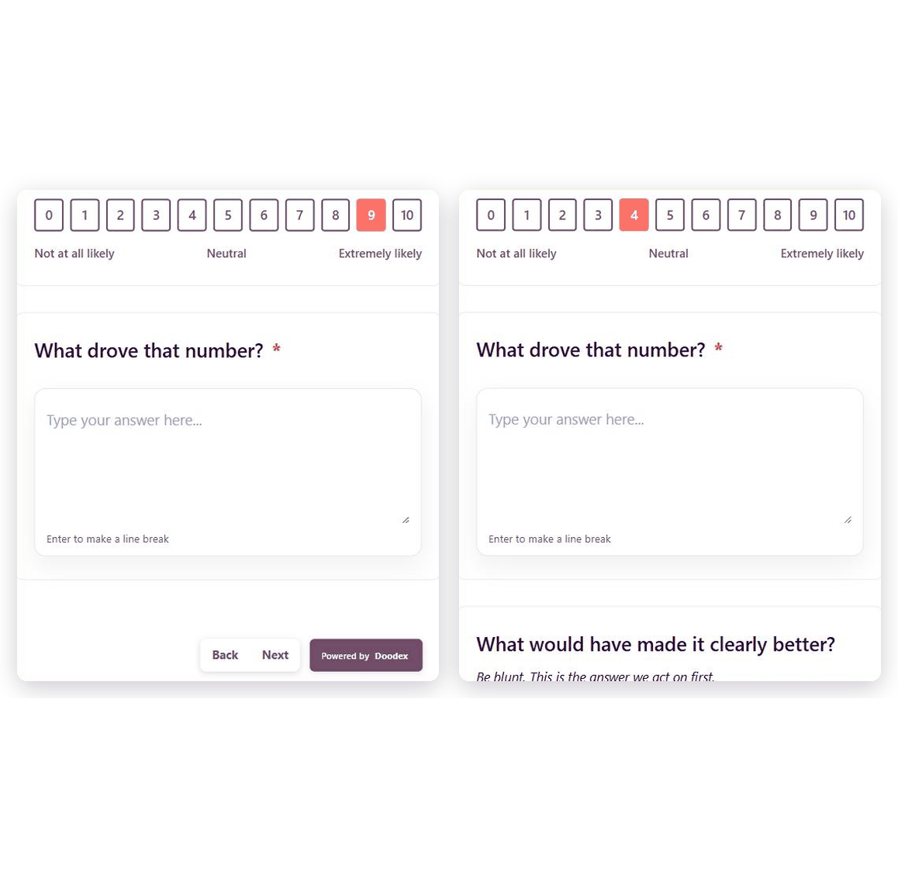
Conditional questions
Nobody has to answer a question that does not apply to them. Every irrelevant question you hide is one less reason to abandon the survey halfway.
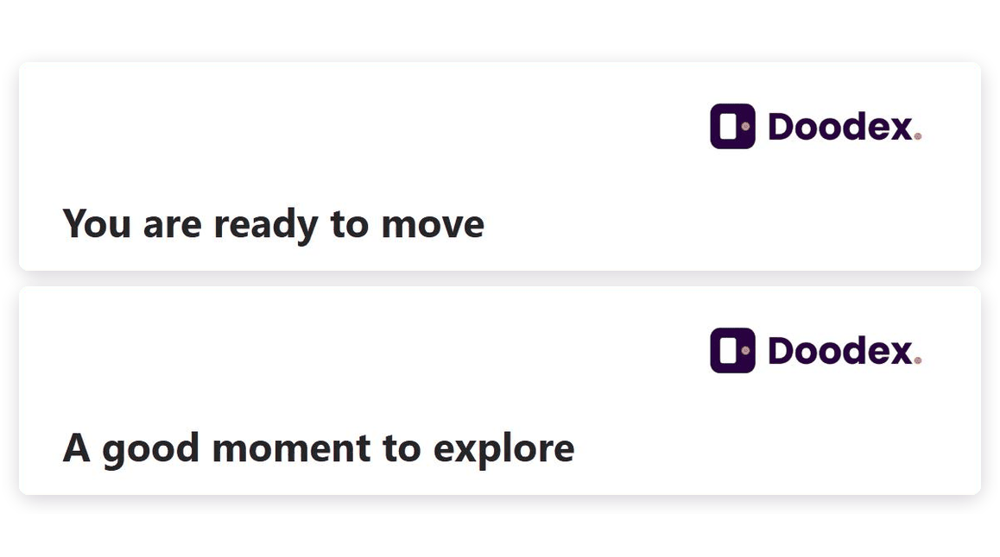
Branching with routed endings
Send a qualified lead to a booking link and everyone else to a polite thank-you. One survey, different endings, chosen by what each person answered.
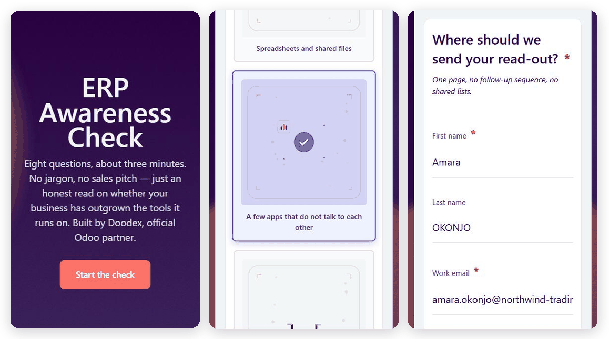
Answers on a phone
Most people will open your survey link on a phone, and the page is built for it — and any reply lands in the inbox you already sync with Odoo.
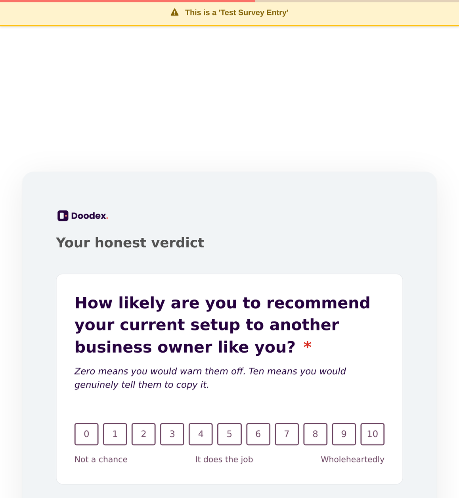
Test mode, with a banner you cannot miss
Click through your own survey questions before anyone else does. A yellow banner marks every test run, and test answers are tagged so you can clear them out.
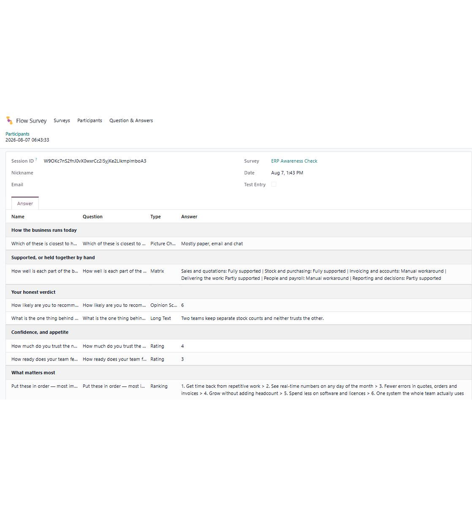
Answers grouped by slide, in plain labels
Open a submission and read it like a conversation — answers in the order they were given, in plain words, not database codes. Skipped questions say so.
Want these screens as your starting point?
Every screen above is a real published survey. Take the same surveys as .json templates, import one into the free Reader, and your survey link is live — no build, and nothing for the person answering to install.
Rather not open a file at all? Flow Survey Builder lets you create your own survey visually, and the surveys it makes run on the free Reader you already have.
View Flow Survey Builder| Why this module | 03 / 05 |
Odoo already ships a Survey app. Why install this one?
Because the native app was built to serve a page of questions, not a guided flow. It will publish an Odoo questionnaire; it will not walk one person through survey questions that change as they answer. Four differences, all checkable:
| Flow Survey Reader | Native Odoo Survey | |
|---|---|---|
| Conditional logic | ✓ A rule combines AND inside itself and OR across rules, and any question type can trigger it. | ✗ OR only, and only choice questions can act as the trigger. |
| Slide branching | ✓ First-match-wins routing, plus a Back button that retraces the real path taken. | ✗ None — two profiles cannot be sent down two routes to two different endings. |
| Question types | ✓ 25, including file upload, ranking, icon rating, matrix and a database selector. | ✗ 9. No file upload, no ranking, no icon rating scale. |
| What an arriving answer does | ✓ Runs the seven workflow actions attached to a slide — create, update, delete or read a record, schedule an activity, send an email — no code. | ✗ Nothing on its own. Turning it into a lead or an activity needs development. |
Question types, conditional logic and branching are all executed by the free Reader, exactly as the survey defines them.
Why pay $39.86 for an Odoo survey module when this one is free?
Reader is $0 and stays $0 — no response limit, no per-response fee and nothing to outgrow. This Odoo survey module keeps collecting feedback into your own database for as long as it is installed.
| Flow Survey Reader | Native Odoo Survey | Other Survey App #1 | Other Survey App #2 | |
|---|---|---|---|---|
| Entry price | Free | Included with Odoo | $39.86 | $81.52 |
| Free edition that runs forever | ✓ Yes | ✓ Yes | ✗ No | ✗ No free tier |
| Question types available | 25 question types, all rendered | 9 | 9 — inherits the native engine | Its own form engine |
| Conditional display on any question type | ✓ AND within a rule, OR across rules | ✗ OR only, choice questions only | ✗ Logic untouched | ✓ Yes |
| Slide flow with a Back button that retraces the route | ✓ Yes | ✗ No | ✗ No | ✗ No |
| Cover and ending page design included | ✓ Included, no add-on | ✗ No | ✗ No | Sold as separate paid add-ons |
| Answers create Odoo records without code | ✓ 7 action types, run on submit | ✗ No | ✗ No | Needs a custom Server Action |
| Refund policy | Nothing to refund — it is free | — | Not stated on the listing | Stated as non-refundable |
| $81.52 |
| $39.86 |
| $0 |
No subscription and no per-response fee, at any volume — the bar above is the whole cost of running surveys on this module.
There is no trial to run out
Free is free, not 15 days
Reader has no time limit and no response cap. Nothing expires, so there is nothing to cancel and no card to enter.
Self-serve, on your own data
No demo to book and no read-only preview login. You install it and run it on your own database from the first minute.
Documentation written for 17.0
The docs are written against Odoo 17.0, not carried over from an older release, so the screens match what you see.
If you would rather not build it yourself
Doodex is an Odoo Official Partner. Beyond the modules, the team behind Doodex builds, integrates and supports Odoo end to end — and we publish the full Odoo-versus-SAP comparison, so you can judge how far a build can be tailored before you ask. If you want a survey funnel designed and wired into your CRM, that is a service, not a module — write to odoo@doodex.net and we will come back with a costed outline.
A free module with a written support commitment
Free usually means unsupported. Here is what you get in writing instead, and what you do not.
90 days of free support
Ninety days of email support from the day you install, on a free module, at no cost. Write to odoo@doodex.net with your Odoo version and what you are seeing.
Bugs get fixed, in writing
If Reader does not do what this page says it does, that is a bug and we fix it in a release — not a paid customization. Report it and you get a version number back.
Tested on a vanilla Odoo 17.0
Every release is installed and run on a clean Odoo 17.0 database with no other third-party modules before it ships, so a failure on vanilla is on us.
What is not covered, stated plainly
Support does not cover changes to your own code, conflicts caused by other third-party modules, or designing your surveys for you. Those are services — we quote them.
A free module, but not a side project — see what Doodex has delivered for clients running Odoo in production · odoo@doodex.net · WhatsApp +62 821-3120-5030
| FAQs | 04 / 05 |
Questions people ask before installing
Is this a free Typeform alternative?
For the part Typeform charges you for — collecting responses — yes. Reader has no response limit and costs nothing. What it is not is a hosted service: Flow Survey runs inside your own Odoo, so you need an Odoo database to install it in. Most Typeform alternatives ask you to move your data to another SaaS; this one keeps it in the database you already run — which is most of the argument for choosing Odoo instead of another subscription. Running surveys is free, with no cap on responses and no per-response fee.
Is Flow Survey Reader really free forever, or is this a trial?
Free forever. There is no trial period, no expiry date and no card to enter. The module is listed at $0 on the Odoo Apps Store and stays functional for as long as you keep it installed.
Is there a limit on how many responses I can collect?
No. Reader does not meter responses. Answers are stored in your own Odoo database, so the only limit is your database, not a plan. If you have ever hit a Typeform response limit mid-campaign, that is the specific problem this Odoo survey app removes.
Do the people answering my survey need an Odoo account or a portal login?
No. A published survey is served on a public link and anyone with that link can complete it, including in a private window. It is the same mechanism our own public diagnostic on doodex.net uses.
Which Odoo version does Reader support?
Odoo 17.0, on Community or Enterprise — Reader depends only on base, web and website, all of which ship with Community. This listing is the 17.0 build, and the documentation is written against 17.0. There are separate builds for later Odoo versions; if you are on one of those, or you need confirmation for your exact edition and hosting, ask us at odoo@doodex.net before installing — it is free either way.
Can I publish a survey with Reader alone?
Yes. Reader runs any Flow Survey already in your database, and it ships the JSON import wizard, so you can load a ready-made survey file from an integrator, a colleague or another database and publish it yourself.
Can a survey create a lead or a task in Odoo automatically?
Yes, and without writing any code. A slide can carry up to seven actions — create a record, update one, read one into a variable, delete one, schedule an activity, send an email template, or branch between them with a decision node — with the answers mapped straight onto the fields. So a qualification survey can produce a CRM lead with the follow-up already assigned to the right person. The free Reader is what executes them, and it refuses to touch users, groups, companies, settings or access rules while it does.
Does Reader replace Odoo's built-in Survey app?
No. Flow Survey is a separate application with its own models, its own menu and its own security groups, and Reader depends only on base, web and website — not on Odoo's Survey module. Both can live in the same database.
Where is the response data stored, and who can see it?
In your own Odoo database, on your own hosting, under Odoo's standard access rights, split across two groups: authors see their own surveys, administrators see everything. No third-party service receives the answers and no outbound API call is needed to serve a survey. One caveat stated plainly: some styling libraries — icon fonts, country flags, the rich-text toolbar — are fetched by the browser from public CDNs, and no survey data is sent to them. That aside, your GDPR position is the same as for any other data in your Odoo.
What support is included with a free module?
Installation and bug reports on Reader are handled by email at odoo@doodex.net or on WhatsApp at +62 821-3120-5030. Configuration work, custom question types and integration projects are paid services — we will quote them before doing any work, and how far Odoo can be tailored is a fair question to settle first.
Can I migrate surveys or responses I already have in another tool?
Not automatically. Questions from an existing form can be rebuilt as a Flow Survey, and historical answers can be imported into Odoo with a standard data import. If you want that done for you it is a service, not a module — here is a database migration we ran end to end. Ask for a quote.
How often is the module updated, and what happens on the next Odoo version?
Updates are listed in the Releases section below, with the version number and date on each entry. New Odoo major versions get their own build; that section is where it gets announced.
odoo@doodex.net · WhatsApp +62 821-3120-5030
| Releases | 05 / 05 |
Public changelog
One build per Odoo release. This page is the 17.0 build, so the changelog stops here; the later builds have their own listings.
- NEWPublic survey runtime on a shareable link, with no account required for the respondent.
- NEW25 question types, rendered and validated in the browser and again on the server.
- NEWConditional questions and slide branching to routed ending screens.
- NEWCover page and end page rendering, using the survey's palette, fonts and logo, with the Odoo primary colour as the default accent.
- NEWProgress bar on the public page, on by default and switchable per survey.
- NEWWorkflow engine executing the seven action types attached to a slide, with a protected-model denylist.
- NEWJSON survey import, version-guarded, loading a self-contained file with its images embedded.
- NEWShare dialog with a copy-to-clipboard public link built on a random 16-character code.
- NEWTest mode with a warning banner, flagging the submission as a Test Entry.
- NEWParticipants and per-answer records, grouped by slide and written in readable option labels, with skipped questions kept and marked.
- FIXTest submissions are real records. A test run creates a participant flagged Test Entry, and it counts in the Participants statistic until you delete it.
- FIXJSON is a design transfer, not a backup. Participants and answers are never exported or imported with the file.
- FIXNo respondent login, partial save or resume. Each visit starts a fresh session and the survey is completed in one go.
- FIXNot CDN-free. Some front-end libraries are fetched by the browser from public CDNs; allow-list them or mirror them on an air-gapped server.
Listed because a buyer would find out anyway. Everything above is a deliberate boundary of this edition, not a defect — ask us if any of it is a blocker for you.
Works great with
On a later Odoo already?
This is the 17.0 build. There are separate Flow Survey Reader listings for the newer Odoo versions — install the one that matches your database, not this one.
Free, uncapped, and running in production today
Install the free Reader and publish your first survey link. If anything is unclear, ask before you install — it costs nothing either way.
Scan a code with your phone, or type the address on the button — both reach the same place.